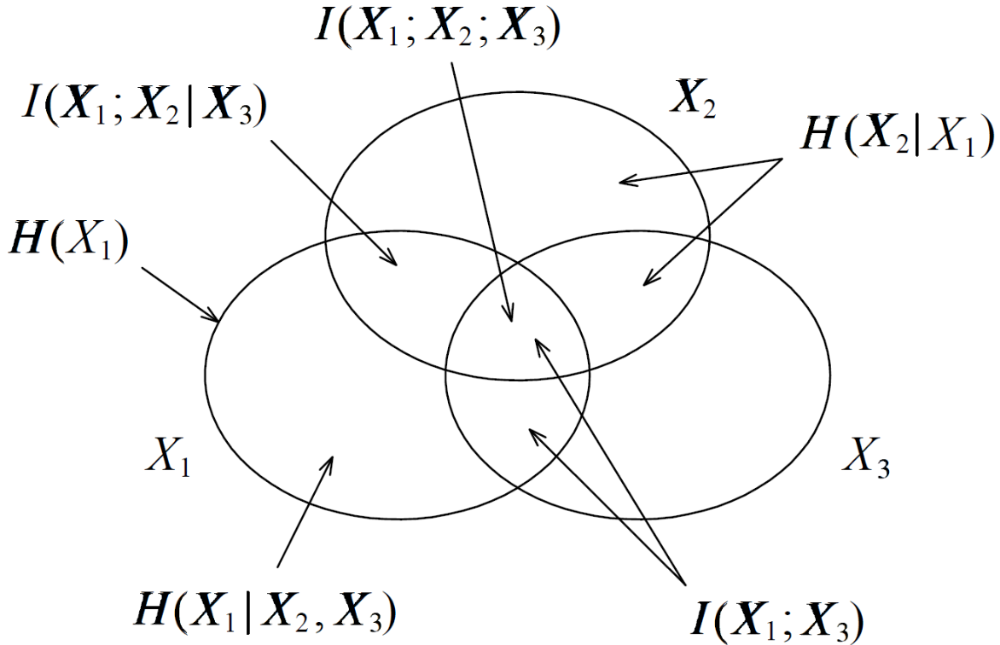
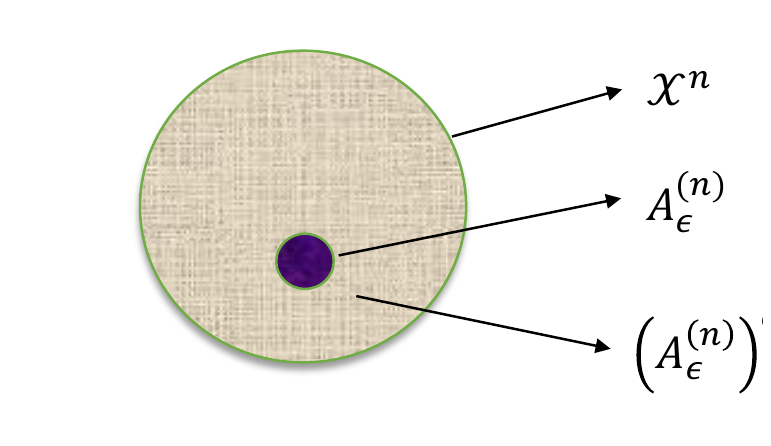
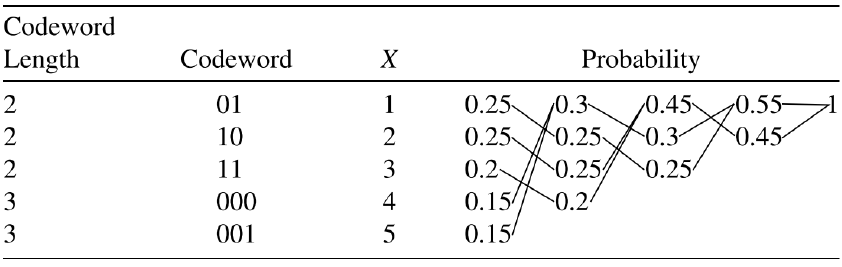
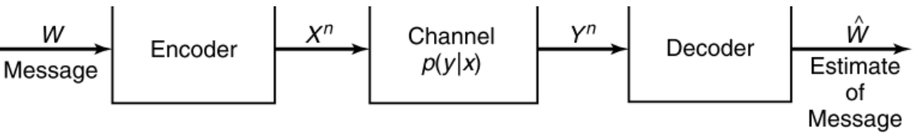
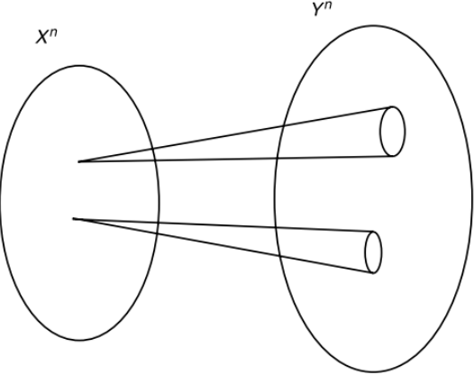
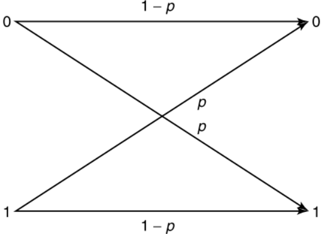
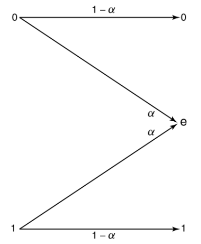
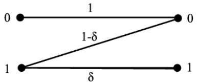

信息论复习笔记
信息论复习笔记
约定：除非特别说明，\(\log\) 以 2 为底，信息单位为 bit。
1. 信息度量
熵
自信息：
\[ \imath_X(x)=-\log p(x)=\log\frac1{p(x)}. \]
离散熵：
\[ H(X)=-\sum_{x\in\mathcal X}p(x)\log p(x) =\mathbb E\left[\log\frac1{p(X)}\right]. \]
性质：
- \(0\le H(X)\le \log|\mathcal X|\)。
- \(H(X)=0\) 当且仅当 \(X\) 几乎必然为常数。
- \(H(X)=\log|\mathcal X|\) 当且仅当 \(X\) 均匀。
- \(H(p)\) 对分布 \(p\) 是凹函数。
二元熵：
\[ h_2(p)=-p\log p-(1-p)\log(1-p). \]
\(h_2(p)=h_2(1-p)\)，最大值 \(1\) 在 \(p=1/2\) 处取得。
联合熵与条件熵
\[ H(X,Y)=-\sum_{x,y}p(x,y)\log p(x,y). \]
\[ H(Y\mid X) =\sum_xp(x)H(Y\mid X=x) =-\sum_{x,y}p(x,y)\log p(y\mid x). \]
链式法则：
\[ H(X,Y)=H(X)+H(Y\mid X)=H(Y)+H(X\mid Y). \]
多变量版本：
\[ H(X_1,\ldots,X_n) =\sum_{i=1}^nH(X_i\mid X_1,\ldots,X_{i-1}). \]
条件作用减少熵：
\[ H(X\mid Y,Z)\le H(X\mid Y)\le H(X). \]
零条件熵：
\[ H(Y\mid X)=0 \]
当且仅当存在函数 \(g\) 使 \(Y=g(X)\) 几乎处处成立。
KL 散度
\[ D(p\|q)=\sum_xp(x)\log\frac{p(x)}{q(x)}. \]
性质：
- \(D(p\|q)\ge0\)，等号当且仅当 \(p=q\)。
- 一般 \(D(p\|q)\ne D(q\|p)\)，不是距离。
- 若 \(p(x)>0,q(x)=0\)，则 \(D(p\|q)=\infty\)。
- 对 \((p,q)\) 联合凸。
编码解释：
\[ \mathbb E_p[-\log q(X)] = H(p)+D(p\|q). \]
用错分布 \(q\) 编码真实分布 \(p\)，平均多付 \(D(p\|q)\) bit。
互信息
定义：
\[ I(X;Y)=D(p_{XY}\|p_Xp_Y) =\sum_{x,y}p(x,y)\log\frac{p(x,y)}{p(x)p(y)}. \]
等价式必须熟：
\[ \boxed{ I(X;Y) =H(X)-H(X\mid Y) =H(Y)-H(Y\mid X) =H(X)+H(Y)-H(X,Y) } \]
性质：
- \(I(X;Y)=I(Y;X)\ge0\)。
- \(I(X;Y)=0\) 当且仅当 \(X,Y\) 独立。
- \(I(X;X)=H(X)\)。
- \(I(X;Y)\le \min\{H(X),H(Y)\}\)。
条件互信息：
\[ I(X;Y\mid Z)=H(X\mid Z)-H(X\mid Y,Z)\ge0. \]
注意：条件作用不一定减少互信息。若 \(X,Y\) 独立且均为 \(\mathrm{Bern}(1/2)\)，令 \(Z=X\oplus Y\)，则
\[ I(X;Y)=0,\qquad I(X;Y\mid Z)=1. \]
信息图

常用对应：
| 图形语言 | 信息论表达 |
|---|---|
| 并集 | \(H(X,Y)\) |
| 交集 | \(I(X;Y)\) |
| 差集 | \(H(X\mid Y)\) |
| 三元交 | \(I(X;Y;Z)=I(X;Y)-I(X;Y\mid Z)\) |
三元互信息可以为负，不要把它当普通面积。
2. 链式法则与不等式
熵链式：
\[ H(X^n)=\sum_{i=1}^nH(X_i\mid X^{i-1}). \]
互信息链式：
\[ I(X^n;Y) =\sum_{i=1}^nI(X_i;Y\mid X^{i-1}). \]
KL 链式：
\[ D(p(x,y)\|q(x,y)) =D(p(x)\|q(x)) +D(p(y\mid x)\|q(y\mid x)). \]
其中第二项表示对 \(p(x)\) 加权平均：
\[ D(p(y\mid x)\|q(y\mid x)) =\sum_xp(x)\sum_yp(y\mid x)\log\frac{p(y\mid x)}{q(y\mid x)}. \]
数据处理不等式：
\[ X\to Y\to Z \quad\Longrightarrow\quad I(X;Z)\le I(X;Y). \]
等价直觉：处理数据不会凭空增加关于源的信息。
Fano 不等式。若 \(X\to Y\to \hat X\)，\(P_e=\Pr(\hat X\ne X)\)，则
\[ H(X\mid Y)\le H(X\mid \hat X) \le h_2(P_e)+P_e\log(|\mathcal X|-1). \]
常用弱化：
\[ H(X\mid Y)\le 1+P_e\log|\mathcal X|. \]
反推错误率下界：
\[ P_e\ge \frac{H(X\mid Y)-1}{\log|\mathcal X|}. \]
3. AEP、典型集与型
AEP
若 \(X_1,X_2,\ldots\) i.i.d. \(\sim p(x)\)，则
\[ -\frac1n\log p(X^n)\xrightarrow{P}H(X). \]
弱典型集：
\[ A_\epsilon^{(n)} =\left\{x^n: \left|-\frac1n\log p(x^n)-H(X)\right|<\epsilon \right\}. \]
典型集三件事：
\[ \Pr(X^n\in A_\epsilon^{(n)})\to1. \]
若 \(x^n\in A_\epsilon^{(n)}\)，
\[ 2^{-n(H+\epsilon)} \le p(x^n) \le 2^{-n(H-\epsilon)}. \]
典型集大小约为
\[ |A_\epsilon^{(n)}|\doteq 2^{nH(X)}. \]

型
序列 \(x^n\) 的型：
\[ P_{x^n}(a)=\frac1nN(a\mid x^n). \]
类型数不超过
\[ (n+1)^{|\mathcal X|}. \]
型类大小：
\[ \frac{1}{(n+1)^{|\mathcal X|}}2^{nH(P)} \le |T(P)|\le 2^{nH(P)}. \]
在分布 \(Q\) 下，某个具体序列概率为
\[ Q^n(x^n) =2^{-n[H(P_{x^n})+D(P_{x^n}\|Q)]}. \]
类型类概率指数阶：
\[ Q^n(T(P))\doteq 2^{-nD(P\|Q)}. \]
4. 熵率
随机过程 \(\mathcal X=\{X_i\}\) 的熵率：
\[ \bar H(\mathcal X) =\lim_{n\to\infty}\frac1nH(X_1,\ldots,X_n). \]
条件熵率：
\[ H'(\mathcal X) =\lim_{n\to\infty}H(X_n\mid X_1,\ldots,X_{n-1}). \]
平稳过程满足：
\[ \boxed{\bar H(\mathcal X)=H'(\mathcal X)}. \]
平稳马尔可夫链若平稳分布为 \(\mu\)、转移矩阵为 \(P\)：
\[ \bar H(\mathcal X) =H(X_2\mid X_1) =-\sum_i\mu_i\sum_jP_{ij}\log P_{ij}. \]
二状态链
\[ P= \begin{pmatrix} 1-\alpha & \alpha\\ \beta & 1-\beta \end{pmatrix}, \qquad \mu=\left(\frac{\beta}{\alpha+\beta},\frac{\alpha}{\alpha+\beta}\right), \]
所以
\[ \bar H =\frac{\beta}{\alpha+\beta}h_2(\alpha) +\frac{\alpha}{\alpha+\beta}h_2(\beta). \]
5. 信源编码
前缀码与 Kraft 不等式
\(D\) 叉前缀码长度 \(\ell_i\) 存在当且仅当
\[ \sum_iD^{-\ell_i}\le1. \]
若长度满足 Kraft 不等式，就能构造前缀码。
最优平均长度：
\[ H_D(X)\le L^*<H_D(X)+1, \]
其中
\[ H_D(X)=\sum_ip_i\log_D\frac1{p_i}. \]
对 \(n\) 个符号分组编码：
\[ \frac1nH(X^n)\le \frac1nL_n^* <\frac1nH(X^n)+\frac1n. \]
i.i.d. 情况下冗余小于 \(1/n\)，因此平均每符号码长可逼近 \(H(X)\)。
Huffman 编码
Huffman 每次合并最小的两个概率。它给出单符号前缀码的最优平均长度。

步骤：
- 概率从小到大排序。
- 反复合并两个最小概率。
- 从树根回标 0/1 得到码字。
- 算 \(L=\sum_ip_i\ell_i\)，检查 \(H(X)\le L<H(X)+1\)。
Shannon code 与错误分布
令
\[ \ell_i=\left\lceil\log\frac1{p_i}\right\rceil. \]
则
\[ H(X)\le L<H(X)+1. \]
如果真实分布是 \(p\)，但按 \(q\) 设计码长：
\[ H(p)+D(p\|q) \le \mathbb E_p\ell(X) < H(p)+D(p\|q)+1. \]
6. 信道容量
DMC
离散无记忆信道由三元组
\[ (\mathcal X,p(y\mid x),\mathcal Y) \]
给出，每次输出只依赖当前输入。

容量：
\[ \boxed{C=\max_{p(x)}I(X;Y)}. \]
求容量的一般套路：
- 写 \(p(x)\)，由转移矩阵算 \(p(y)\)。
- 用
\[ I(X;Y)=H(Y)-H(Y\mid X). \]
- \(H(Y\mid X)=\sum_xp(x)H(p(\cdot\mid x))\)。
- 对输入分布最大化。固定信道时 \(I(X;Y)\) 关于 \(p(x)\) 凹。
容量直觉：

常见信道
| 信道 | 容量 | 最优输入 |
|---|---|---|
| 无噪二元信道 | \(C=1\) | 均匀 |
| BSC\((p)\) | \(C=1-h_2(p)\) | 均匀 |
| BEC\((\alpha)\) | \(C=1-\alpha\) | 均匀 |
| Noisy typewriter | \(C=\log 13\) | 均匀 |
| 弱对称信道 | $C=\log | \mathcal Y |
| Z channel 例题 | \(C=\log(5/4)\) | \(\Pr(X=1)=2/5\) |



BSC 推导：
\[ Y=X\oplus Z,\qquad Z\sim\mathrm{Bern}(p). \]
\[ H(Y\mid X)=H(Z)=h_2(p),\qquad H(Y)\le1. \]
均匀输入使 \(Y\) 均匀，所以
\[ C=1-h_2(p). \]
BEC 推导：
\[ H(Y\mid X)=h_2(\alpha), \]
均匀输入时
\[ H(Y)=h_2(\alpha)+1-\alpha, \]
所以
\[ C=1-\alpha. \]
Z channel 例题若 \(\Pr(X=1)=\pi\)：
\[ I(X;Y)=h_2(\pi/2)-\pi. \]
令导数为 0 得 \(\pi^*=2/5\)，容量
\[ C=\log(5/4). \]
信道编码定理
信道码：
\[ M=2^{nR},\qquad R=\frac1n\log M. \]
香农第二定理：
\[ R<C\Rightarrow \exists\ \text{codes with }P_e^{(n)}\to0, \]
\[ R>C\Rightarrow P_e^{(n)}\not\to0. \]
Achievability 证明骨架：
- 随机生成 \(2^{nR}\) 个码字。
- 接收端找唯一与 \(Y^n\) 联合典型的码字。
- 真码字不联合典型的概率趋 0。
- 错码字联合典型的概率约 \(2^{-nI(X;Y)}\)。
- 并集界：
\[ P_e\lesssim \epsilon+2^{nR}2^{-n(I(X;Y)-3\epsilon)}. \]
只要 \(R<I(X;Y)-3\epsilon\)，错误概率趋 0；再对 \(p(x)\) 最大化得到 \(R<C\)。
Converse 证明骨架：
\[ nR=H(W) =I(W;\hat W)+H(W\mid \hat W). \]
由 Fano：
\[ H(W\mid \hat W)\le1+P_e^{(n)}nR. \]
由数据处理：
\[ I(W;\hat W)\le I(X^n;Y^n). \]
单字母化：
\[ I(X^n;Y^n)\le\sum_{i=1}^nI(X_i;Y_i)\le nC. \]
合起来：
\[ nR\le nC+1+P_e^{(n)}nR. \]
若 \(P_e^{(n)}\to0\)，则 \(R\le C\)。
反馈不增加 DMC 容量：
\[ C_{\mathrm{FB}}=C. \]
信源-信道分离。若信源熵率为 \(\bar H(\mathcal V)\)，每个信源符号对应一次信道使用：
\[ \bar H(\mathcal V)<C \]
时可可靠传输。若 \(k\) 个信源符号使用 \(n\) 次信道：
\[ \frac{k}{n}\bar H(\mathcal V)<C. \]
7. 连续变量与高斯信道
微分熵
连续随机变量密度为 \(f\)：
\[ h(X)=-\int f(x)\log f(x)\,dx. \]
微分熵可以为负，且缩放会改变：
\[ h(aX)=h(X)+\log|a|. \]
离散量化关系：
\[ H(X^\Delta)+\log\Delta\to h(X),\qquad \Delta\to0. \]
连续 KL 与互信息：
\[ D(f\|g)=\int f(x)\log\frac{f(x)}{g(x)}\,dx. \]
\[ I(X;Y)=\iint f(x,y)\log\frac{f(x,y)}{f(x)f(y)}\,dxdy. \]
互信息仍非负，且对可逆坐标变换不变。
高斯最大熵。若 \(\operatorname{Var}(X)=\sigma^2\)：
\[ h(X)\le \frac12\log(2\pi e\sigma^2), \]
等号当且仅当 \(X\) 高斯。
AWGN 容量
信道：
\[ Y=X+Z,\qquad Z\sim\mathcal N(0,N), \]
功率约束：
\[ \mathbb E[X^2]\le P. \]
容量：
\[ \boxed{ C=\frac12\log\left(1+\frac PN\right) } \]
推导：
\[ I(X;Y)=h(Y)-h(Y\mid X)=h(Y)-h(Z). \]
由于 \(\operatorname{Var}(Y)\le P+N\)，
\[ h(Y)\le\frac12\log(2\pi e(P+N)), \]
而
\[ h(Z)=\frac12\log(2\pi eN). \]
所以
\[ I(X;Y)\le\frac12\log\left(1+\frac PN\right). \]
等号由 \(X\sim\mathcal N(0,P)\) 达到。
并行高斯信道与水填充
若
\[ Y_j=X_j+Z_j,\qquad Z_j\sim\mathcal N(0,N_j), \]
总功率 \(\sum_jP_j\le P\)，容量优化为
\[ C=\max_{P_j\ge0,\ \sum_jP_j\le P} \sum_j\frac12\log\left(1+\frac{P_j}{N_j}\right). \]
水填充解：
\[ P_j=[\nu-N_j]^+, \]
\(\nu\) 由
\[ \sum_j[\nu-N_j]^+=P \]
确定。
8. 解题模板
算 \(H,D,I\)
- 先从联合表算 \(p_X,p_Y\)。
- 算 \(H(X),H(Y),H(X,Y)\)。
- 用
\[ H(X\mid Y)=H(X,Y)-H(Y). \]
- 用
\[ I(X;Y)=H(X)+H(Y)-H(X,Y). \]
- 判断独立：看 \(p(x,y)=p(x)p(y)\)，或看 \(I(X;Y)=0\)。
证明不等式
常用开局：
- 把两边展开成熵。
- 移项后识别为 \(I(\cdot;\cdot\mid\cdot)\ge0\)。
- 或构造 KL 散度 \(D(p\|q)\ge0\)。
- 若出现处理链路，尝试用 DPI。
求 DMC 容量
- 设输入参数，例如 \(\Pr(X=1)=\pi\)。
- 由信道矩阵写输出分布。
- 写
\[ I(X;Y)=H(Y)-H(Y\mid X). \]
- 对参数求导或利用对称性。
- 检查边界点。
写信道编码证明
Achievability：
随机码本 -> 联合典型译码 -> 两类错误 -> 并集界 -> R < I(X;Y) -> 最大化Converse：
均匀消息 -> Fano -> 数据处理 -> 单字母化 -> R <= C常见坑
- \(H(X\mid Y)\le H(X)\)，但 \(I(X;Y\mid Z)\) 不一定小于 \(I(X;Y)\)。
- \(D(p\|q)\) 不对称，真实分布放前面。
- AEP 不是说所有序列等概率，而是高概率集中到约 \(2^{nH}\) 个典型序列上。
- \(H(X\mid Y)=0\) 的方向是“\(Y\) 由 \(X\) 决定”，不要反过来。
- 熵率不是单时刻熵；平稳马尔可夫链用 \(H(X_2\mid X_1)\)。
- 信道容量优化的是输入分布 \(p(x)\)，信道转移概率固定。
- 微分熵可为负，互信息仍非负。
- AWGN 里的 \(P,N\) 是功率/方差，不是标准差。
- 水填充不是平均分功率，而是 \(P_j=[\nu-N_j]^+\)。
9. 公式速查
信息度量
\[ H(X)=-\sum_xp(x)\log p(x) \]
\[ H(X,Y)=H(X)+H(Y\mid X) \]
\[ D(p\|q)=\sum_xp(x)\log\frac{p(x)}{q(x)} \]
\[ I(X;Y)=H(X)-H(X\mid Y)=D(p_{XY}\|p_Xp_Y) \]
\[ X\to Y\to Z\Rightarrow I(X;Z)\le I(X;Y) \]
\[ H(X\mid Y)\le h_2(P_e)+P_e\log(|\mathcal X|-1) \]
AEP 与编码
\[ -\frac1n\log p(X^n)\xrightarrow{P}H(X) \]
\[ |A_\epsilon^{(n)}|\doteq2^{nH(X)} \]
\[ \sum_iD^{-\ell_i}\le1 \]
\[ H_D(X)\le L^*<H_D(X)+1 \]
信道
\[ C=\max_{p(x)}I(X;Y) \]
\[ C_{\mathrm{BSC}(p)}=1-h_2(p) \]
\[ C_{\mathrm{BEC}(\alpha)}=1-\alpha \]
\[ C_{\mathrm{weak\ sym}}=\log|\mathcal Y|-H(r) \]
\[ C_{\mathrm{AWGN}}=\frac12\log\left(1+\frac PN\right) \]